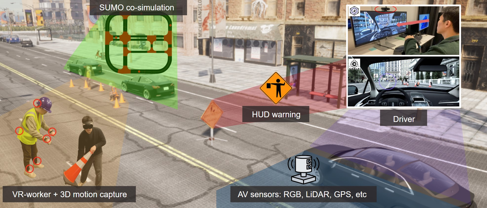

DUALSense
An Open-Source Dual-User VR Platform for
Driver–Worker Interaction with Multimodal Sensing

Why?
Studying safety-critical road scenarios in the field is often infeasible or costly, yet these long-tail corner cases matter for human-factors and autonomous-driving research.
How?
DUALSense brings two human participants—a driver and a VR worker—into one simulation for multimodal data collection and configurable scenarios.
Validation
A study with 33 participants evaluates the platform's usability.
Extensibility
Future extensions could study pedestrians and cyclists, human–AV interactions, and a wider range of safety-critical scenarios.
Interaction and Data Collection
Live VR workers and prerecorded human-motion animations coexist in a shared work zone.
Human Data Collection
Driver gaze and semantic segmentation, followed by VR motion and trajectory.
Multimodality Autonomous Driving Data Collection
Multi-view RGB cameras, LiDAR point clouds, vehicle trajectories, and driver control inputs.
Asynchronous Human-in-the-Loop Co-Simulation
CARLA–SUMO traffic simulation and independent data-collection streams.
Scenarios & Work-Zone Types
Six hazardous driving scenarios and three work-zone configurations.